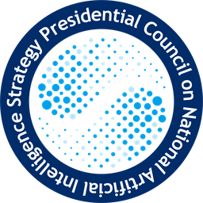
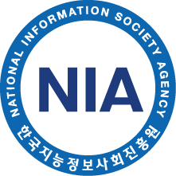

2025.03 – 현재

대통령직속 국가인공지능전략위원회 · 전문관 (Specialist)정책기획국 총괄전략팀 · 서울
- 대한민국 인공지능행동계획 기획 지원
- 데이터 분과 · 법률TF · CAIO협의회 운영 지원
- 공문서 마크다운 적용 기획 (보도자료), 인공지능 동향 분석
AI 정책과 디지털 전환의 접점에서 일합니다. 컴퓨터공학을 전공하고 NIA에서 정부 디지털 서비스를 기획했으며, 현재는 대통령직속 국가인공지능전략위원회에서 대한민국 인공지능행동계획 정책이행을 지원하고 있습니다. 기술과 정책, 그리고 사용자 경험을 연결하는 서비스 기획이 저의 전문 영역입니다.

대통령직속 국가인공지능전략위원회 · 전문관 (Specialist)
NIA 한국지능정보사회진흥원 · 선임연구원 (Senior Researcher)